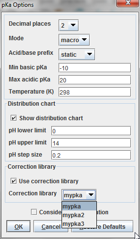
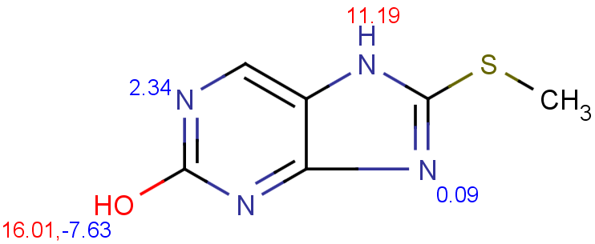

If you feel your experimental data could improve the performance of the default pKa calculator,
you can take advantage of the supervised pKa learning method that is built
into the pKa calculator. Special structural parts may have an effect on the pKa
values calculated by the built-in method, so your correction library based on experimental data of your compound
family helps the pKa calculator to increase the prediction accuracy.
The first step of the training process is the input of the collected data into
an sdf file. After that, you have to run the training algorithm which
creates a correction library from your data. This will be stored on your computer.
You can use this correction library via MarvinSketch, cxcalc, Chemical Terms.
MarvinSketch
- Select MarvinSketch menu:Tools > Protonation > pKa.
- Set the 'Use correction library' box to activate the training option (see figure below).
- If you have created multiple training sets, choose the most accurate one from the dropdown list below the checkbox.
 |
The next figure shows the results with (I) and without (II) applying the correction llbrary.
|

|

|
| I. pKa calculation with training data |
II. pKa calculation without training data |
|---|
cxcalc
To apply your corrections for the pKa calculation use the parameter --correctionlibrary or its short form: -L).
cxcalc pKa --correctionlibrary [library name] [input file/string]
Example
$ cxcalc pKa --correctionlibrary mypka "CSC1=NC2=C(N1)C=NC(O)=N2"
Result
id apKa1 apKa2 bpKa1 bpKa2 atoms
1 11.19 16.01 2.34 -2.59 7,11,9,4
If you use cxcalc pKa calculation without the correction library, the results will be calculated with the built-in dataset.
Example
$ cxcalc pKa "CSC1=NC2=C(N1)C=NC(O)=N2"
Result
id apKa1 apKa2 bpKa1 bpKa2 atoms
1 8.34 16.01 2.34 -2.59 7,11,9,4
For more options see this page.
Chemical Terms
pKa calculation applying correction library can be performed via Chemical Terms from Evaluator command line or from Instant JChem.
Chemical Terms Evaluator
The Chemical Terms Evaluator is designed to evaluate mathematical expressions on molecules. To use your correction library, the following expession has to be typed into the command line.
evaluate -e "pKa('correctionlibrary:[library name]')" "[input file/string]"
Example
evaluate -e "pKa('correctionlibrary:mypka')" "CSC1=NC2=C(N1)C=NC(O)=N2"
Result
;;;-2,59;;;11,19;;2,34;;16,01;
For more details see this page.